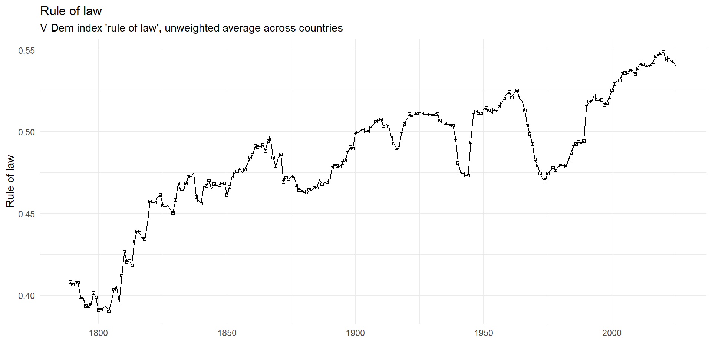
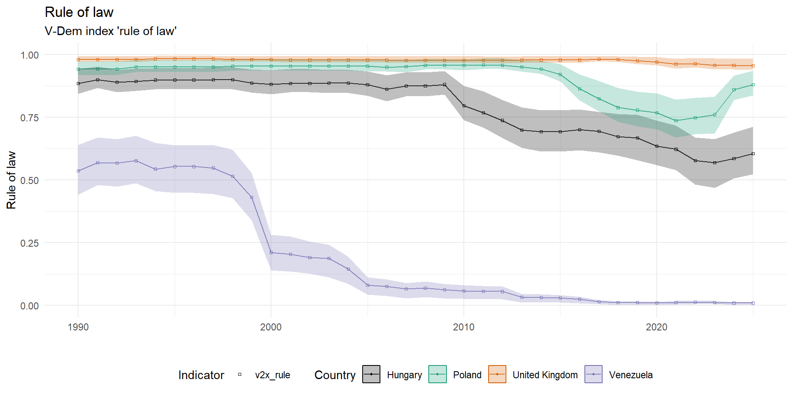
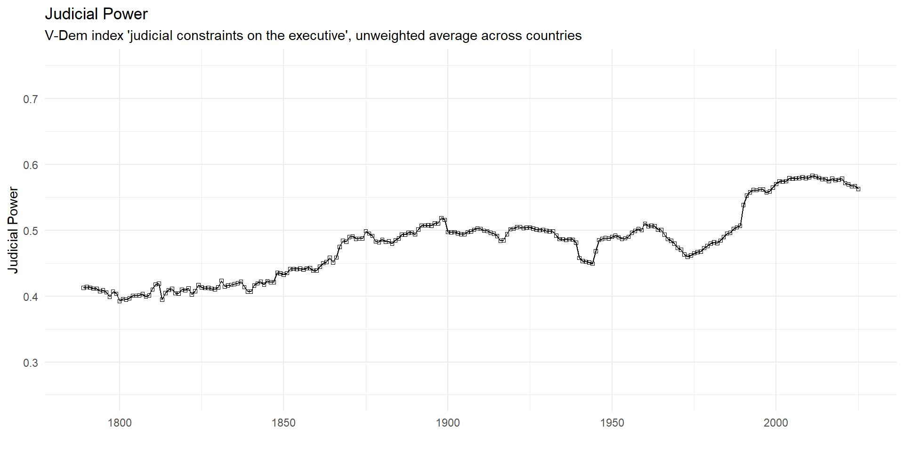
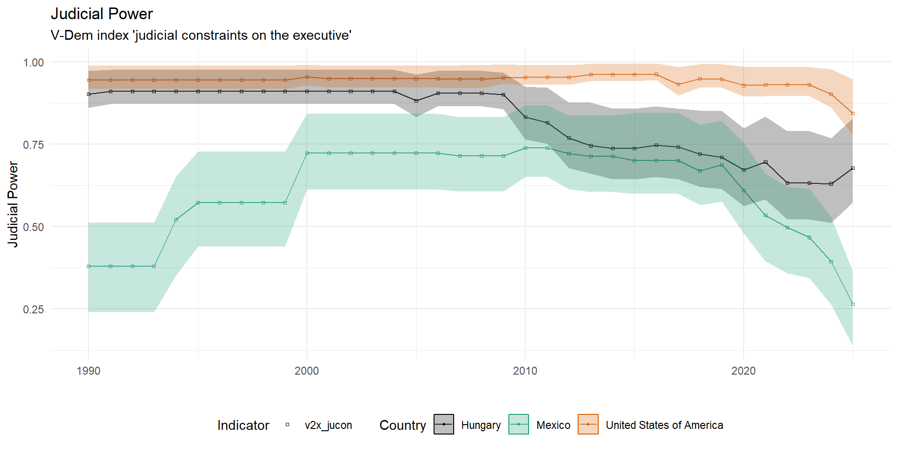

Week 2
this week:
why anyone would empower a court
the problem this creates: who governs?
the concept doing most of the work, judicial independence
what does it take for a court to constrain a government that could simply ignore it?
someone needs to adjudicate disputes
this could be the ruler, or a person appointed by the executive
committing to an independent court instead makes adjudication more credible
an independent court is a signal: the executive pledges to abide by its decisions
credible commitments benefit the government
the English crown could borrow more cheaply after the Glorious Revolution (North and Weingast 1989)
secure property rights help the economy develop
internationally, treaties and courts work in a similar way
empowering courts raises the question of who ultimately governs
if governments must abide by what courts say, and courts have the last word, aren’t courts the real rulers?
for Hobbes, whoever has the last word is the sovereign
independent courts on one side, representative government enacting the will of the people on the other
liberal democracies manage the tension through constitutionalism and the separation of powers
quite successful at maintaining the illusion that everyone is subject to the law (the rule of law)
yet subjecting legislative to judicial power is perhaps particularly normatively objectionable (Waldron 2006, 2021)
thin (formal) conceptions: law must be general, public, prospective, clear, consistent, possible to comply with, stable and actually applied, the eight desiderata of Fuller (1964)
thick (substantive) conceptions add rights, democracy or social justice
courts feature in both: as the guarantee of consistent application (thin) and as the guardians of rights (thick)


separation of powers: legislative, executive and judicial functions sit with separate branches, staffed by different people, each confined to its own function (Vile 1967)
there is no liberty if the power of judging is not separated from legislative and executive power (Montesquieu 1748)
in practice, checks and balances: the branches overlap so that each can restrain the others
even in systems where judicial independence is strong, there are many formal points of contact between the judiciary, the legislature and the executive
appointment of judges
competence disputes
judicial review of administrative acts
judicial review of statutory law
who reviews: one constitutional court (centralized) or every court (diffuse)
when: before the law takes effect (ex ante or a priori, France only until 2010) or after (ex post or a posteriori, almost everywhere else)
how: in the abstract, detached from any case (usually referral by politicians), or concretely, in a dispute between parties
who can trigger it: politicians, courts, ombudsmen, individuals (directly challenging a law in Germany or Colombia)
how strong: strike down (strong form) or leave parliament the last word (weak form)
each dimension changes which cases arrive and who can be blamed for the result
one type of indirect effect of judicialization is legislator moral hazard (Fox and Stephenson 2011; Ward and Gabel 2019)
this type of moral hazard is more common with ex ante judicial review (Ward and Gabel 2019)
| position | core claim | who |
|---|---|---|
| rights as trumps | individual rights trump the preferences of the majority | Dworkin (1977) |
| process theory | review should police the democratic process, not its outcomes | Ely (1980) |
| the uneasy case | review adds a veto point against rights violations, at some democratic cost | Fallon (2008) |
| the case against | where democracy works, legislatures should settle disagreements about rights | Waldron (2006) |
it is commonly assumed that court rulings must be complied with and followed by affected actors in virtually all constitutional systems
but what are the sources of this judicial power? why and when does anyone listen to courts?
following Staton and Moore (2011), we can usefully identify two pillars of judicial power:
autonomy – or independence in a strict sense – or the extent to which judges’ decisions reflect their true preferences as opposed to someone else’s
effectiveness – or compliance – or the extent to which courts can compel actors to comply with adverse decisions
| High Effectiveness | Low Effectiveness | |
| High Autonomy | Powerful Court | Ignorable Court |
| Low Autonomy | Puppet Court | Joke Court |


new courts consolidate power by not antagonizing the government for an initial period
expand jurisdiction through broad interpretation of access rules and legal domains
a common strategy is to first create the power-expanding principle without applying it in the initial case to mitigate costs of compliance (Marbury)
judicial independence is the single most important attribute associated with modern judiciaries
yet there is disagreement on the precise content of this concept
independence to do what? independence from what or whom?
the degree to which judges actually decide cases in accordance with their own determinations of the evidence, the law and justice, free from the coercion, blandishments, interference, or threats from governmental authorities or private citizens. (Rosenn 1987, 8)
can a judge be independent when the judiciary as a whole isn’t?
does “dependence” on another judge’s or court’s decision undermine judicial independence?
what about anticipatory judicial behaviour?
free from “governmental authorities or private citizens”
rulings based on “own determinations of … the law” vs “the law”
there are three main ways of measuring judicial independence
de jure measures code formal guarantees such as tenure and removal rules, so they are easy to compare but may not reflect practice
de facto measures rely on expert surveys (V-Dem), human rights reports (CIRI) or court rulings, so they are closer to practice but more subjective
latent measures combine many imperfect indicators into a single estimate (Linzer and Staton 2015)
different measures often disagree with each other (Ríos-Figueroa and Staton 2014)
court rulings are a misleading indicator
a court that never rules against the government may be captured, or it may never have been asked to
a government that expects to lose in court may not legislate in the first place
POLS0113: Judicial Politics